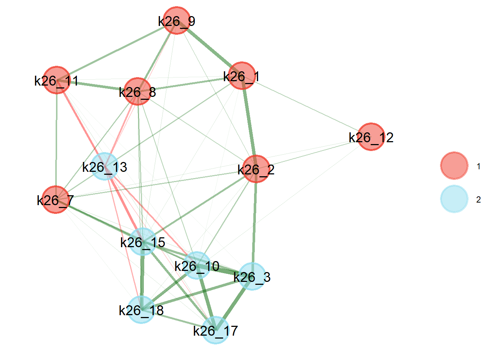
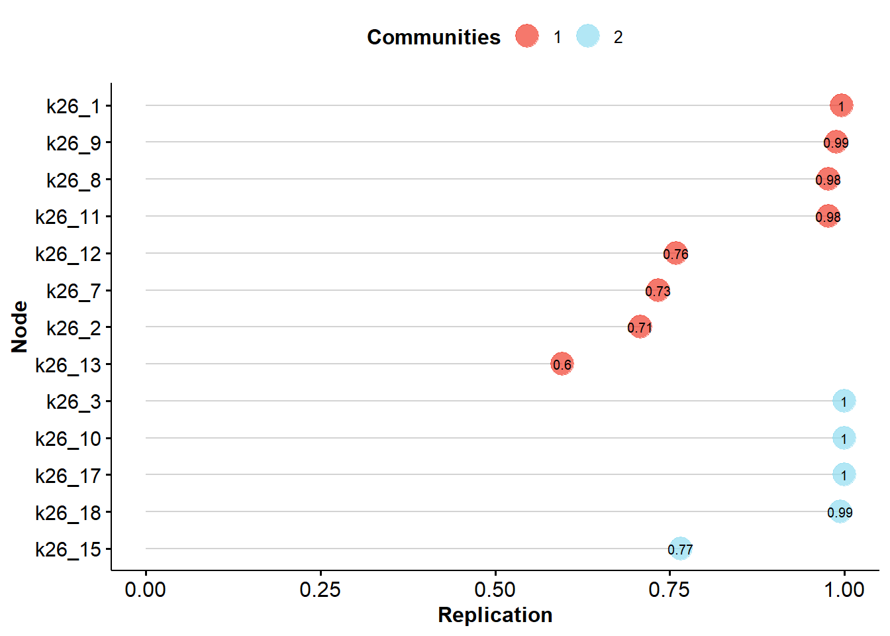

Tässä osiossa analysoimme ilmoitusjärjestelmiin kohdistuvien asennemuuttujien faktorirakennetta verkostoanalyysin ja konfirmatorisen faktorianalyysin avulla
Osiossa käytetyt paketit
library(EFAtools) # Useimmat datasopivuusfunktiotlibrary(HH) # VIF-suureen laskeminenlibrary(lavaan) # EFA- ja CFA-mallien asettaminenlibrary(EGAnet) # EGA-mallien asettaminenlibrary(lavaanPlot) # CFA-mallien piirtäminenlibrary(corrplot) # Korrelaatio- ja kovarianssimatriisien piirtäminenlibrary(semTools) # CFA-mallien vertailulibrary(tidyverse)
Datan avaaminen
data <-read.csv2("output/anonymisoitudata.csv", tryLogical =FALSE)
30.1 Muuttujien valitseminen analyysiin
Päätimme jättää pois neljä muuttujaa patteristosta:
k26_4: Jos henkilöllä on alentunut toimintakyky, häntä ei voi syyttää toiminnastaan
k26_6: Konfliktitilanteet ovat osa työtäni
k26_14: Tilanteet ovat yksittäistapauksia
k26_5: Ilmoitan kaikki kohtaamani tilanteet
Ensimmäiset kolme muuttujaa eivät ole ilmoitusjärjestelmiin kohdistuvia asenteita, vaan ennemmin yleisiä asenteita epäasiallisia ja väkivaltaisia kohtaamisia kohtaan. Viimeinen muuttuja liittyy ilmoitusjärjestelmiin, mutta kuvailee ennemmin vastaajan toimintaa eikä asenteita.
Otimme mukaan neljätoista muuttujaa analyysiin:
k26_1: Prosessit ovat liian raskaita tai työläitä
k26_2: Prosessit eivät johda toimenpiteisiin
k26_3: Pelkään esihenkilön vastatoimia
k26_7: Minulla ei ole tilaisuutta tai mahdollisuutta ilmoittaa
k26_8: Epäselvää, milloin minun tulisi ilmoittaa
k26_9: Unohdan ilmoittaa
k26_10: Pelkään ammattitaitoni kyseenalaistamista
k26_11: Ajattelin, että joku muu hoitaa ilmoituksen
k26_12: Valtakunnallisesta ilmoitusprosessista olisi hyötyä
k26_13: En halua pahaa tekijälle
k26_15: Pelkään, että tekijä saa tietää ilmoituksesta
k26_16: Kollegani näkisi minut ongelmallisena tai vaikeana
k26_17: Pelkään menettäväni työpaikkani
k26_18: Pelkään kollegoiden vastatoimia
Muuttuja k26_12 käännettiin ennen analyysia, sillä se on ainoa positiivisesti muotoiltu väite. Täten mahdolliset faktorit edustavat negatiivisia mielipiteitä.
Teimme ensin eksploratiivisen verkostoanalyysin (engl. exploratory graph analysis, EGA) ymmärtääksemme muuttujien välisiä suhteita paremmin.
Uniikin varianssin analyysi
ega.uva <-UVA(data = data |>select(all_of(muuttujat)))print(ega.uva)
Variable pairs with wTO > 0.30 (large-to-very large redundancy)
----
Variable pairs with wTO > 0.25 (moderate-to-large redundancy)
node_i node_j wto
k26_16 k26_18 0.259
----
Variable pairs with wTO > 0.20 (small-to-moderate redundancy)
node_i node_j wto
k26_3 k26_17 0.221
Uniikin varianssin analyysi tunnistaa yhden muuttujaparin, joiden varianssit verkostomallissa ovat liian päällekkäisiä: k26_16 (“Kollegani näkisivät minut ongelmallisena tai vaikeana jos tekisin ilmoituksen”) ja k26_18 (“Pelkään kollegoideni ryhtyvän vastatoimiin, jos tekisin ilmoituksen”).
Model: GLASSO (EBIC with gamma = 0.5)
Correlations: pearson
Lambda: 0.0724734367060774 (n = 100, ratio = 0.1)
Number of nodes: 13
Number of edges: 52
Edge density: 0.667
Non-zero edge weights:
M SD Min Max
0.070 0.099 -0.171 0.278
----
Algorithm: Walktrap
Number of communities: 2
k26_1 k26_2 k26_3 k26_7 k26_8 k26_9 k26_10 k26_11 k26_12 k26_13 k26_15
1 1 2 1 1 1 2 1 1 2 2
k26_17 k26_18
2 2
----
Unidimensional Method: Leading Eigenvector
Unidimensional: No
----
TEFI: -7.101

Kuva 30.1: Eksploratiivinen verkostoanalyysi, 14 muuttujaa, Walktrap-algoritmi, GLASSO-malli
Kuva 30.1 osoittaa EGA-mallin estimoinnin rakenteen. Malli ehdottaa kahta muuttujaryhmää, A ja B.
Ryhmä A:
k26_1 Liian raskaat
k26_2 Ei johda toimenpiteisiin
k26_7 Ei tilaisuutta
k26_8 Epäselvää
k26_9 Unohdan
k26_11 Joku muu hoitaa
k26_12 Valtakunnallinen prosessi (käännetty)
Ryhmä B:
k26_3 Pelkään esihenkilön vastatoimia
k26_10 Ammattitaidon kyseenalaistaminen
k26_13 En halua pahaa
k26_15 Tekijä saa tietää
k26_17 Pelkään työpaikan menettämistä
k26_18 Pelkään kollegoiden vastatoimia
Muuttujien perusteella ryhmä A:n voi tulkita edustavan ilmoitusprosessiin liittyviä teknisiä ja käytännöllisiä haasteita. Ryhmä B:n voi tulkita edustavan ilmoituksen sosiaalisia vaikutuksia.
Model: GLASSO (EBIC)
Correlations: pearson
Algorithm: Walktrap
Unidimensional Method: Leading Eigenvector
----
EGA Type: EGA
Bootstrap Samples: 1000 (Resampling)
2 3 4
Frequency: 0.769 0.194 0.037
Median dimensions: 2 [0.98, 3.02] 95% CI

Kuva 30.2: EGA-mallin ulottuvuuksien stabiliteetti
Stabiliteettiarvot yli noin 0.75 ovat luotettavia. Analyysi osoittaa, että muuttuja k26_13 (Tekijä saa tietää) ei ole vakaa bootstrap-analyysissa, ja voi vaihdella otosten välillä. Muuttujat k26_7 (Ei tilaisuutta) ja k26_2 (Ei johda toimenpiteisiin) ovat vakauden rajalla. Muut muuttujat täyttävät vakauden raja-arvon.
Ulottuvuuksien mediaani oli 2, mutta 95 prosentin luottamusväli oli laaja ja sisälsi myös yhden ja kolmen (95 % CI 0,98-3,02). Tuhannen bootstrap-ajon mallissa kahden ulottuvuuden malli esiintyi 76,9 prosenttia kerroista, kolmen ulottuvuuden malli 19,4 prosenttia kerroista ja neljän ulottuvuuden malli 3,7 prosenttia kerroista.
30.3 EGA-mallin asettaminen CFA-malliin
Kokeilimme asettaa CFA-mallin, jossa noudatetaan EGA-analyysin tuottamaa faktorirakennetta. Käytimme robustia ML-menetelmää FIML-poistomenetelmällä.
Malli asettui hyväksyttävästi eikä Heywood-tapauksia esiintynyt. Globaali khii neliö -suure on merkitsevä, mikä osoittaisi huonoa sopivuutta.
Robustit sopivuusindeksit ovat seuraavat: \(\text{RMSEA} = .079 [.071, .087]\), \(\text{CFI} = .926\), \(\text{SRMR} = .051\). Yleisiä raja-arvoja vastaan malli ei sovi hyväksyttävästi, mutta on kuitenkin hyväksyttävyyden rajoilla.
Ensimmäisen faktorin osalta standardisoidut lataukset ovat samoissa tasoissa (0.463-0.666), paitsi muuttujan k26_12 (Valtakunnallinen prosessi) kohdalla (0.198).
Toisen faktorin osalta standardisoidut lataukset ovat hyvinkin samanlaisia (0.788-0.843), paitsi muuttujan k26_13 (En halua pahaa tekijälle) kohdalla (-0.537).
Faktorien välinen korrelaatio on vahva (r = 0.782).
Kuva 30.3: Z-standardisoitujen residuaalien kovarianssimatriisi, vain absoluuttiset residuaalit yli 1.96
Kuva 30.3 osoittaa useita ongelmallisia residuaaleja (> |1.96|). Suurin ongelma näyttäisi olevan muuttujien k26_2 (F1, ei johda toimenpiteisiin) ja k26_11 (F1, joku muu hoitaa ilmoituksen puolestani) välillä.
Myös muuttujat k26_3 (F2, pelkään esihenkilön vastatoimia) ja k26_9 (F1, unohdan tehdä ilmoituksen) osoittavat suurta virhekovarianssia.
Laskimme modifikaatioindeksin osoittavan ongelmallista sopivuutta, jos indeksi oli enemmän kuin kymmenen prosenttia globaalista khii neliö -suuresta (> 36.745). Ongelmallisuuden rajan täyttivät kolme faktorilatausta ja kaksi virhekorrelaatiota.
Muuttujat k26_2 (Ei johda toimenpiteisiin), k26_9 (Unohdan tehdä ilmoituksen) ja k26_1 (Liian raskas prosessi) osoittivat suurta sopivuuden parannusta, jos ne annettaisiin ladata faktorille f2. Ensimmäisen muuttujan kohdalla odotettu standardisoitu lataus olisi positiivinen, 0.461. Toisen ja kolmannen muuttujan kohdalla odotettu standardisoidut lataukset olisivat negatiiviset, -0.413 ja -0.396.
Muuttuja k26_11 (Joku muu hoitaa) osoitti sopivuuden parannusta, jos sen annettaisiin virhekorreloida muuttujien k26_2 (Ei johda toimenpiteisiin) ja k26_13 (En halua pahaa tekijälle) kanssa. Odotetut standardisoidut ristikorrelaatiot olisivat molemmat negatiivisia, -0.280 ja -0.203.
Muuttujan k26_2 vapauttaminen molemmille faktoreille voi olla teoreettisesti motivoitua Kokemus toimenpiteiden puutteellisuudesta voidaan nähdä niin prosessiin liittyvänä esteenä kuin ilmoituksen sosiaalisena vaikutuksena.
Muuttujien k26_9 ja k26_1 vapauttaminen molemmille faktoreille ei ole teoreettisesti motivoitua. Jos toinen faktori osoittaa ilmoituksen jälkeisiä odotettuja sosiaalisia vaikutuksia, unohtaminen tai prosessin koettu raskaus eivät sovi tähän tulkintaan.
Muuttujan k26_11 kahden virhekorrelaation vapauttaminen voisi olla teoreettisesti motivoitua, mutta virheet tulisi korreloida toisin päin kuin modifikaatioindeksit ehdottavat:
Jos henkilö kokee, ettei ilmoitukset johda toimenpiteisiin (k26_2), hän ei välttämättä ole henkilökohtaisesti motivoitunut tekemään ilmoituksia, mutta voi hyväksyä, että joku muu hoitaisi ilmoituksen hänen puolestaan (k26_11). Jos henkilö on erittäin samaa mieltä toimenpiteiden olemattomuuden kanssa, hän voisi hyvin myös olla erittäin samaa mieltä siitä, että joku muu tekee ilmoituksen. Tämä ehdottaisi siis positiivista virhekorrelaatiota – mutta modifikaatioindeksi ehdottaa negatiivista virhekorrelaatiota, mikä ei sovi tulkintaan.
Jos henkilö ei halua tehdä pahaa tekijälle (k26_13), hän voi kokea vastuunvapautuksen, jos joku muu hoitaisi ilmoituksen hänen puolestaan (k26_11). Toisin sanoen, virhekorrelaation tulisi olla positiviinen, mutta modifikaatioindeksi ehdottaa negatiivista korrelaatiota. Tämä mekanismi oletettavasti myös medioituisi muuttujan k26_15 kautta, eli että tekijä saisi tietää: jos henkilö ei koe, että tekijä saa tietää ilmoituksesta, yhteyttä ei nähtäisi.
Päätelmien pohjalta näemme, että muuttujan k26_2 vapauttaminen molemmille faktoreille on motivoitua, mutta muut muutokset eivät ole.
Malli asettui hyväksyttävästi eikä Heywood-tapauksia esiintynyt. Globaali khii neliö -suure on merkitsevä, mikä osoittaisi huonoa sopivuutta.
Robustit sopivuusindeksit ovat seuraavat: \(\text{RMSEA} = .075 [.067, .083]\), \(\text{CFI} = .934\), \(\text{SRMR} = .049\). RMSEA ja CFI eivät täytä yleisiä raja-arvoja, mutta SRMR on hyväksyttävä.
Ensimmäisen faktorin osalta standardisoidut lataukset vaihtelevat hieman enemmän kuin aikaisemmin (0.326-0.671), Muuttujan k26_12 (Valtakunnallinen prosessi) lataus on vielä matalin kaikista (0.189).
Toisen faktorin osalta standardisoidut lataukset ovat hyvinkin samanlaisia (0.787-0.842), paitsi muuttujien k26_13 (En halua pahaa tekijälle) ja k26_2 (Ei johda toimenpiteisiin) kohdalla (-0.568 ja 0.365).
Faktorien välinen korrelaatio on vieläkin vahva (r = 0.712).
################### Nested Model Comparison #########################
Scaled Chi-Squared Difference Test (method = "satorra.bentler.2001")
lavaan->unknown():
lavaan NOTE: The "Chisq" column contains standard test statistics, not the
robust test that should be reported per model. A robust difference test is
a function of two standard (not robust) statistics.
Df AIC BIC Chisq Chisq diff Df diff Pr(>Chisq)
cfa.tulos.2 63 44114 44316 421.82
cfa.tulos 64 44159 44355 468.27 30.886 1 2.736e-08 ***
---
Signif. codes: 0 '***' 0.001 '**' 0.01 '*' 0.05 '.' 0.1 ' ' 1
####################### Model Fit Indices ###########################
chisq.scaled df.scaled pvalue.scaled rmsea.robust cfi.robust
cfa.tulos.2 331.948† 63 .000 .075† .934†
cfa.tulos 367.450 64 .000 .079 .926
tli.robust srmr aic bic
cfa.tulos.2 .919† .049† 44114.392† 44315.896†
cfa.tulos .910 .051 44158.844 44355.433
################## Differences in Fit Indices #######################
df.scaled rmsea.robust cfi.robust tli.robust srmr
cfa.tulos - cfa.tulos.2 1 0.004 -0.008 -0.009 0.002
aic bic
cfa.tulos - cfa.tulos.2 44.452 39.538
Malli 2 sopii merkitsevästi paremmin kuin Malli 1. Kaikki Malli 2:n sopivuusindeksit ovat parantuneet verrattuna Malli 1:een. Parannukset ovat kuitenkin pieniä: \(\Delta \text{RMSEA} = -0.004, \Delta \text{CFI} = 0.008, \Delta \text{SRMR} = -0.002, \Delta \text{AIC} = -44.5\).
Kuva 30.4: Z-standardisoitujen residuaalien kovarianssimatriisi, vain absoluuttiset residuaalit yli 1.96
Kuva 30.4 osoittaa vieläkin useita ongelmallisia residuaaleja (> |1.96|). Suurin ongelma näyttäisi olevan muuttujien k26_2 (F1, ei johda toimenpiteisiin) ja k26_11 (F1, joku muu hoitaa ilmoituksen puolestani) välillä.
Laskimme tälle mallille raja-arvoksi modifikaatioindeksin yli 33.3948. Ongelmallisuuden rajan täytti yksi faktorilataus ja kolme virhekorrelaatiota.
Muuttuja k26_7 (Ei tilaisuutta) osoitti suurta sopivuuden parannusta, jos se annettaisiin ladata faktorille f2. Muuttujan odotettu standardisoitu lataus olisi positiivinen, 0.363.
Muuttuja k26_11 (Joku muu hoitaa) osoitti vieläkin sopivuuden parannusta, jos sen annettaisiin virhekorreloida muuttujien k26_2 (Ei johda toimenpiteisiin) ja k26_13 (En halua pahaa tekijälle) kanssa. Odotetut ristikorrelaatiot olivat kuta kuinkin samoissa tasoissa kuin aikaisemmin, -0.227 ja -0.197.
Lisäksi muuttuja k26_1 (Liian raskas prosessi) osoitti sopivuuden parannusta, jos sen annettaisiin virhekorreloida muuttujan k26_2 (Ei johda toimenpiteisiin) kanssa. Odotettu standardisoitu ristikorrelaatio olisi positiivinen, 0.217.
Muuttujan k26_7 vapauttaminen molemmille faktoreille voi olla teoreettisesti motivoitua. Tilaisuuden puute voi ainakin osittain johtua sosiaalisesta työympäristössä; jos esimerkiksi henkilö joutuisi tekemään ilmoituksen jaetulla laitteella tai jaetussa ympäristössä (esim. kahvihuoneen tietokoneella), muut kollegat voisivat saada tietää ilmoituksesta, mikä taas voi yhtyä negatiivisiin asenteisiin ilmoituksen sosiaalisista vaikutuksista. Tämä implikoisi medioivaa suhdetta: jos henkilön taso faktorilla f2 on matala, hän ei näkisi tätä ongelmana, jolloin muuttujan lataus faktorille f2 pitäisi kadota.
Muuttujan k26_11 virhekorrelaatiot eivät ole motivoituja (ks. yllä).
Muuttujan k26_1 virhekorrelaation vapauttaminen muuttujan k26_2 kanssa voi olla motivoitua. Nämä voivat yhdessä mitata henkilön agenssin kokemuksen puutetta. Toisaalta tämä teoria vaatisi, että muut agenssiin liittyvät asenteet (esim. valtakunnallisen prosessin suosiminen) yhteiskorreloisivat, eli muodostaisivat oman faktorin. On myös mahdollista, että faktori f1 edustaa juuri agenssin tai prosessin kontrollin kokemusten puutetta – tuolloin virheen tulisi jo olla katettu faktorilla, eli virhekorrelaatio ei voi edustaa tätä tulkintaa.
Emme jatka analyysia näiden vapauttamisella, sillä mahdolliset muutokset voivat kapitalisoida sattumaa tässä vaiheessa.
30.5 Yhteenveto
Mittaristo näyttäisi edustavan kahden faktorin rakennetta. Ensimmäinen faktori voi edustaa joko ilmoitusprosessiin liittyviä teknisiä ja käytännöllisiä haasteita, tai syvemmällä tasolla henkilön kokemusta prosessin kontrollin ja siihen liittyvän agenssin puutetta. Toinen faktori edustaa tulkinnamme mukaan ilmoituksen koettuja negatiivisia sosiaalisia vaikutuksia.
Malli kuitenkin sopii kohtalaisen heikosti. Mahdollisia selitteitä tälle voi olla, että otoksessamme esiintyy heterogeenisyyttä eri alaryhmien välillä, että mallista puuttuu tärkeitä muuttujia tai että malliin on lisätty kuulumattomia muuttujia. Jatkotutkimuksen tulisi selvittää näitä mahdollisuuksia suuremmilla otoksilla, jotta tarkemmat analyysit ovat mahdollisia; tällä hetkellä otoksemme ei kokemuksen mukaan mahdollista kovin tarkkoja kohderyhmävertailuja.
Lähdekoodi
# Ilmoitusjärjestelmäasenteiden verkostoanalyysi {#sec-ilmoasenteet_validointi}---eval: true---Tässä osiossa analysoimme ilmoitusjärjestelmiin kohdistuvien asennemuuttujien faktorirakennetta verkostoanalyysin ja konfirmatorisen faktorianalyysin avulla```{r}#| label: ilmoasenteet_validointi-00-paketit#| code-summary: "Osiossa käytetyt paketit"library(EFAtools) # Useimmat datasopivuusfunktiotlibrary(HH) # VIF-suureen laskeminenlibrary(lavaan) # EFA- ja CFA-mallien asettaminenlibrary(EGAnet) # EGA-mallien asettaminenlibrary(lavaanPlot) # CFA-mallien piirtäminenlibrary(corrplot) # Korrelaatio- ja kovarianssimatriisien piirtäminenlibrary(semTools) # CFA-mallien vertailulibrary(tidyverse)``````{r}#| label: ilmoasenteet_validointi-01-avaaminen#| code-summary: "Datan avaaminen"data <-read.csv2("output/anonymisoitudata.csv", tryLogical =FALSE)```## Muuttujien valitseminen analyysiin {#sec-ilmoasenteet_validointi-muuttujat}Päätimme jättää pois neljä muuttujaa patteristosta:- `k26_4`: Jos henkilöllä on alentunut toimintakyky, häntä ei voi syyttää toiminnastaan- `k26_6`: Konfliktitilanteet ovat osa työtäni- `k26_14`: Tilanteet ovat yksittäistapauksia- `k26_5`: Ilmoitan kaikki kohtaamani tilanteetEnsimmäiset kolme muuttujaa eivät ole ilmoitusjärjestelmiin kohdistuvia asenteita, vaan ennemmin yleisiä asenteita epäasiallisia ja väkivaltaisia kohtaamisia kohtaan. Viimeinen muuttuja liittyy ilmoitusjärjestelmiin, mutta kuvailee ennemmin vastaajan toimintaa eikä asenteita.Otimme mukaan neljätoista muuttujaa analyysiin:- `k26_1`: Prosessit ovat liian raskaita tai työläitä- `k26_2`: Prosessit eivät johda toimenpiteisiin- `k26_3`: Pelkään esihenkilön vastatoimia- `k26_7`: Minulla ei ole tilaisuutta tai mahdollisuutta ilmoittaa- `k26_8`: Epäselvää, milloin minun tulisi ilmoittaa- `k26_9`: Unohdan ilmoittaa- `k26_10`: Pelkään ammattitaitoni kyseenalaistamista- `k26_11`: Ajattelin, että joku muu hoitaa ilmoituksen- `k26_12`: Valtakunnallisesta ilmoitusprosessista olisi hyötyä- `k26_13`: En halua pahaa tekijälle- `k26_15`: Pelkään, että tekijä saa tietää ilmoituksesta- `k26_16`: Kollegani näkisi minut ongelmallisena tai vaikeana- `k26_17`: Pelkään menettäväni työpaikkani- `k26_18`: Pelkään kollegoiden vastatoimiaMuuttuja `k26_12` käännettiin ennen analyysia, sillä se on ainoa positiivisesti muotoiltu väite. Täten mahdolliset faktorit edustavat negatiivisia mielipiteitä.```{r}#| label: ilmoasenteet_validointi-02-koodaus#| code-summary: "Yhden muuttujan kääntäminen ennen analyysia"# Tallennetaan muuttujien nimet helpottaakseen analyysiamuuttujat <-c("k26_1", "k26_2", "k26_3", "k26_7", "k26_8","k26_9", "k26_10", "k26_11", "k26_12", "k26_13","k26_15", "k26_16", "k26_17", "k26_18")# Käännetään muuttuja k26_13data <- data |>mutate(across( k26_13,~case_match( .x,1~7,2~6,3~5,4~4,5~3,6~2,7~1,NA~NA ) ) )```## Eksploratiivinen verkostoanalyysi {#sec-ilmoasenteet_validointi-ega}Teimme ensin eksploratiivisen verkostoanalyysin (engl. *exploratory graph analysis*, EGA) ymmärtääksemme muuttujien välisiä suhteita paremmin.```{r}#| label: ilmoasenteet_validointi-03-egaUVA#| code-summary: "Uniikin varianssin analyysi"ega.uva <-UVA(data = data |>select(all_of(muuttujat)))print(ega.uva)```Uniikin varianssin analyysi tunnistaa yhden muuttujaparin, joiden varianssit verkostomallissa ovat liian päällekkäisiä: `k26_16` ("Kollegani näkisivät minut ongelmallisena tai vaikeana jos tekisin ilmoituksen") ja `k26_18` ("Pelkään kollegoideni ryhtyvän vastatoimiin, jos tekisin ilmoituksen").Malli ehdottaa poistettavaksi muuttujaa `r ega.uva$keep_remove$keep`.```{r}#| label: fig-ilmoasenteet_validointi-04-ega#| fig-cap: "Eksploratiivinen verkostoanalyysi, 14 muuttujaa, Walktrap-algoritmi, GLASSO-malli"#| code-summary: "EGA-mallin asettaminen"ega.malli <-EGA(data = ega.uva$reduced_data,uni.method ="LE",corr ="pearson",na.data ="pairwise",model ="glasso",algorithm ="walktrap")print(ega.malli)```@fig-ilmoasenteet_validointi-04-ega osoittaa EGA-mallin estimoinnin rakenteen. Malli ehdottaa kahta muuttujaryhmää, A ja B.Ryhmä A:- `k26_1` Liian raskaat- `k26_2` Ei johda toimenpiteisiin- `k26_7` Ei tilaisuutta- `k26_8` Epäselvää- `k26_9` Unohdan- `k26_11` Joku muu hoitaa- `k26_12` Valtakunnallinen prosessi (käännetty)Ryhmä B:- `k26_3` Pelkään esihenkilön vastatoimia- `k26_10` Ammattitaidon kyseenalaistaminen- `k26_13` En halua pahaa- `k26_15` Tekijä saa tietää- `k26_17` Pelkään työpaikan menettämistä- `k26_18` Pelkään kollegoiden vastatoimiaMuuttujien perusteella ryhmä A:n voi tulkita edustavan ilmoitusprosessiin liittyviä teknisiä ja käytännöllisiä haasteita. Ryhmä B:n voi tulkita edustavan ilmoituksen sosiaalisia vaikutuksia.```{r}#| label: fig-ilmoasenteet_validointi-05-egastabiliteetti#| fig-cap: "EGA-mallin ulottuvuuksien stabiliteetti"#| code-summary: "EGA-mallin ulottuvuuksien stabiliteetti"ega.boot <-bootEGA(data = ega.uva$reduced_data,iter =1000,type ="resampling",uni.method ="LE",corr ="pearson",na.data ="pairwise",model ="glasso",algorithm ="walktrap",seed =1234# Mahdollistaa toistettavuuden)print(ega.boot)```Stabiliteettiarvot yli noin 0.75 ovat luotettavia. Analyysi osoittaa, että muuttuja `k26_13` (Tekijä saa tietää) ei ole vakaa bootstrap-analyysissa, ja voi vaihdella otosten välillä. Muuttujat `k26_7` (Ei tilaisuutta) ja `k26_2` (Ei johda toimenpiteisiin) ovat vakauden rajalla. Muut muuttujat täyttävät vakauden raja-arvon.Ulottuvuuksien mediaani oli 2, mutta 95 prosentin luottamusväli oli laaja ja sisälsi myös yhden ja kolmen (95 % CI 0,98-3,02). Tuhannen bootstrap-ajon mallissa kahden ulottuvuuden malli esiintyi 76,9 prosenttia kerroista, kolmen ulottuvuuden malli 19,4 prosenttia kerroista ja neljän ulottuvuuden malli 3,7 prosenttia kerroista.## EGA-mallin asettaminen CFA-malliin {#sec-ilmoasenteet_validointi-cfa1}Kokeilimme asettaa CFA-mallin, jossa noudatetaan EGA-analyysin tuottamaa faktorirakennetta. Käytimme robustia ML-menetelmää FIML-poistomenetelmällä.### Mallin asettaminen {#sec-ilmoasenteet_validointi-cfa1-asettaminen}```{r}#| label: ilmoasenteet_validointi-06-cfamalli#| code-summary: "CFA-mallin määrittely ja asettaminen"cfa.malli <-'# latentit muuttujat f1 =~ k26_1 + k26_2 + k26_7 + k26_8 + k26_9 + k26_11 + k26_12 f2 =~ k26_3 + k26_10 + k26_13 + k26_15 + k26_17 + k26_18 # faktorikovarianssit f1 ~~ f2 'cfa.tulos <-cfa(model = cfa.malli,data = data,estimator ="MLR",missing ="fiml")summary(cfa.tulos, fit.measures =TRUE, standardized =TRUE, ci =TRUE)labels <-c(k26_1 ="Raskas prosessi",k26_2 ="Toimenpiteiden\npuute",k26_3 ="Esihenkilön\nvastatoimet",k26_7 ="Ei tilaisuutta",k26_8 ="Epäselvää",k26_9 ="Unohdan",k26_10 ="Ammattitaidon\nkyseenalaistaminen",k26_11 ="Joku muu\nhoitaa puolesta",k26_12 ="Valtakunnallinen\nprosessi",k26_13 ="En halua\npahaa tekijälle",k26_15 ="Tekijä saa\ntieteää",k26_17 ="Pelko työpaikan\nmenettämisestä",k26_18 ="Kollegoiden\nvastatoimet",f1 ="f1")lavaanPlot2( cfa.tulos,labels = labels,include ="covs",coef_labels =TRUE,stars =c("covs", "latent"))```Malli asettui hyväksyttävästi eikä Heywood-tapauksia esiintynyt. Globaali khii neliö -suure on merkitsevä, mikä osoittaisi huonoa sopivuutta.Robustit sopivuusindeksit ovat seuraavat: $\text{RMSEA} = .079 [.071, .087]$, $\text{CFI} = .926$, $\text{SRMR} = .051$. Yleisiä raja-arvoja vastaan malli ei sovi hyväksyttävästi, mutta on kuitenkin hyväksyttävyyden rajoilla.Ensimmäisen faktorin osalta standardisoidut lataukset ovat samoissa tasoissa (0.463-0.666), paitsi muuttujan `k26_12` (Valtakunnallinen prosessi) kohdalla (0.198).Toisen faktorin osalta standardisoidut lataukset ovat hyvinkin samanlaisia (0.788-0.843), paitsi muuttujan `k26_13` (En halua pahaa tekijälle) kohdalla (-0.537).Faktorien välinen korrelaatio on vahva (r = 0.782).### Residuaalien tarkastus {#sec-ilmoasenteet_validointi-cfa1-residuaalit}```{r}#| label: fig-ilmoasenteet_validointi-07-cfa-residuaalit#| fig-cap: "Z-standardisoitujen residuaalien kovarianssimatriisi, vain absoluuttiset residuaalit yli 1.96"#| code-summary: "Residuaalit"residuaalit <-lavResiduals(cfa.tulos)$cov.zresiduaalit[abs(residuaalit) <1.96] <-NAcorrplot(abs(residuaalit),is.corr =FALSE,na.label =" ",method ="color")```@fig-ilmoasenteet_validointi-07-cfa-residuaalit osoittaa useita ongelmallisia residuaaleja (\> \|1.96\|). Suurin ongelma näyttäisi olevan muuttujien `k26_2` (F1, ei johda toimenpiteisiin) ja `k26_11` (F1, joku muu hoitaa ilmoituksen puolestani) välillä.Myös muuttujat `k26_3` (F2, pelkään esihenkilön vastatoimia) ja `k26_9` (F1, unohdan tehdä ilmoituksen) osoittavat suurta virhekovarianssia.::: panel-tabset### Faktorilataukset {#sec-ilmoasenteet_validointi-cfa1-mod-faktorit}```{r}#| label: ilmoasenteet_validointi-08-cfamod-faktoritmodificationIndices(cfa.tulos) |>arrange(desc(mi)) |>filter(op =="=~") |>filter(mi >36.745)```### Virhekorrelaatiot {#sec-ilmoasenteet_validointi-cfa1-mod-virheet}```{r}#| label: ilmoasenteet_validointi-09-cfamod-virheetmodificationIndices(cfa.tulos) |>arrange(desc(mi)) |>filter(op =="~~") |>filter(mi >36.745)```:::Laskimme modifikaatioindeksin osoittavan ongelmallista sopivuutta, jos indeksi oli enemmän kuin kymmenen prosenttia globaalista khii neliö -suuresta (\> 36.745). Ongelmallisuuden rajan täyttivät kolme faktorilatausta ja kaksi virhekorrelaatiota.Muuttujat `k26_2` (Ei johda toimenpiteisiin), `k26_9` (Unohdan tehdä ilmoituksen) ja `k26_1` (Liian raskas prosessi) osoittivat suurta sopivuuden parannusta, jos ne annettaisiin ladata faktorille `f2`. Ensimmäisen muuttujan kohdalla odotettu standardisoitu lataus olisi positiivinen, 0.461. Toisen ja kolmannen muuttujan kohdalla odotettu standardisoidut lataukset olisivat negatiiviset, -0.413 ja -0.396.Muuttuja `k26_11` (Joku muu hoitaa) osoitti sopivuuden parannusta, jos sen annettaisiin virhekorreloida muuttujien `k26_2` (Ei johda toimenpiteisiin) ja `k26_13` (En halua pahaa tekijälle) kanssa. Odotetut standardisoidut ristikorrelaatiot olisivat molemmat negatiivisia, -0.280 ja -0.203.Muuttujan `k26_2` vapauttaminen molemmille faktoreille voi olla teoreettisesti motivoitua Kokemus toimenpiteiden puutteellisuudesta voidaan nähdä niin prosessiin liittyvänä esteenä kuin ilmoituksen sosiaalisena vaikutuksena.Muuttujien `k26_9` ja `k26_1` vapauttaminen molemmille faktoreille ei ole teoreettisesti motivoitua. Jos toinen faktori osoittaa ilmoituksen jälkeisiä odotettuja sosiaalisia vaikutuksia, unohtaminen tai prosessin koettu raskaus eivät sovi tähän tulkintaan.Muuttujan `k26_11` kahden virhekorrelaation vapauttaminen voisi olla teoreettisesti motivoitua, mutta virheet tulisi korreloida toisin päin kuin modifikaatioindeksit ehdottavat:- Jos henkilö kokee, ettei ilmoitukset johda toimenpiteisiin (`k26_2`), hän ei välttämättä ole henkilökohtaisesti motivoitunut tekemään ilmoituksia, mutta voi hyväksyä, että joku muu hoitaisi ilmoituksen hänen puolestaan (`k26_11`). Jos henkilö on erittäin samaa mieltä toimenpiteiden olemattomuuden kanssa, hän voisi hyvin myös olla erittäin samaa mieltä siitä, että joku muu tekee ilmoituksen. Tämä ehdottaisi siis positiivista virhekorrelaatiota -- mutta modifikaatioindeksi ehdottaa negatiivista virhekorrelaatiota, mikä ei sovi tulkintaan.- Jos henkilö ei halua tehdä pahaa tekijälle (`k26_13`), hän voi kokea vastuunvapautuksen, jos joku muu hoitaisi ilmoituksen hänen puolestaan (`k26_11`). Toisin sanoen, virhekorrelaation tulisi olla positiviinen, mutta modifikaatioindeksi ehdottaa negatiivista korrelaatiota. Tämä mekanismi oletettavasti myös medioituisi muuttujan `k26_15` kautta, eli että tekijä saisi tietää: jos henkilö ei koe, että tekijä saa tietää ilmoituksesta, yhteyttä ei nähtäisi.Päätelmien pohjalta näemme, että muuttujan `k26_2` vapauttaminen molemmille faktoreille on motivoitua, mutta muut muutokset eivät ole.## Uusi CFA-malli {#sec-ilmoasenteet_validointi-cfa2}```{r}#| label: ilmoasenteet_validointi-10-cfamalli2#| code-summary: "CFA-mallin määrittely ja asettaminen"cfa.malli.2<-'# latentit muuttujat f1 =~ k26_1 + k26_2 + k26_7 + k26_8 + k26_9 + k26_11 + k26_12 f2 =~ k26_2 + k26_3 + k26_10 + k26_13 + k26_15 + k26_17 + k26_18 # faktorikovarianssit f1 ~~ f2 'cfa.tulos.2<-cfa(model = cfa.malli.2,data = data,estimator ="MLR",missing ="fiml")summary(cfa.tulos.2, fit.measures =TRUE, standardized =TRUE, ci =TRUE)lavaanPlot2( cfa.tulos.2,labels = labels,include ="covs",coef_labels =TRUE,stars =c("covs", "latent"))```Malli asettui hyväksyttävästi eikä Heywood-tapauksia esiintynyt. Globaali khii neliö -suure on merkitsevä, mikä osoittaisi huonoa sopivuutta.Robustit sopivuusindeksit ovat seuraavat: $\text{RMSEA} = .075 [.067, .083]$, $\text{CFI} = .934$, $\text{SRMR} = .049$. RMSEA ja CFI eivät täytä yleisiä raja-arvoja, mutta SRMR on hyväksyttävä.Ensimmäisen faktorin osalta standardisoidut lataukset vaihtelevat hieman enemmän kuin aikaisemmin (0.326-0.671), Muuttujan `k26_12` (Valtakunnallinen prosessi) lataus on vielä matalin kaikista (0.189).Toisen faktorin osalta standardisoidut lataukset ovat hyvinkin samanlaisia (0.787-0.842), paitsi muuttujien `k26_13` (En halua pahaa tekijälle) ja `k26_2` (Ei johda toimenpiteisiin) kohdalla (-0.568 ja 0.365).Faktorien välinen korrelaatio on vieläkin vahva (r = 0.712).### Mallien vertailu {#sec-ilmoasenteet_validointi-cfa2-vertailu}```{r}#| label: ilmoasenteet_validointi-11-cfavertailu#| code-summary: "Kahden CFA-mallin sopivuuksien vertailu"vrt <-compareFit( cfa.tulos.2, cfa.tulos,moreIndices =TRUE)summary(vrt)```Malli 2 sopii merkitsevästi paremmin kuin Malli 1. Kaikki Malli 2:n sopivuusindeksit ovat parantuneet verrattuna Malli 1:een. Parannukset ovat kuitenkin pieniä: $\Delta \text{RMSEA} = -0.004, \Delta \text{CFI} = 0.008, \Delta \text{SRMR} = -0.002, \Delta \text{AIC} = -44.5$.### Residuaalien tarkastus {#sec-ilmoasenteet_validointi-cfa2-residuaalit}```{r}#| label: fig-ilmoasenteet_validointi-11-cfa2-residuaalit#| fig-cap: "Z-standardisoitujen residuaalien kovarianssimatriisi, vain absoluuttiset residuaalit yli 1.96"#| code-summary: "Residuaalit"residuaalit <-lavResiduals(cfa.tulos.2)$cov.zresiduaalit[abs(residuaalit) <1.96] <-NAcorrplot(abs(residuaalit),is.corr =FALSE,na.label =" ",method ="color")```@fig-ilmoasenteet_validointi-11-cfa2-residuaalit osoittaa vieläkin useita ongelmallisia residuaaleja (\> \|1.96\|). Suurin ongelma näyttäisi olevan muuttujien `k26_2` (F1, ei johda toimenpiteisiin) ja `k26_11` (F1, joku muu hoitaa ilmoituksen puolestani) välillä.::: panel-tabset### Faktorilataukset {#sec-ilmoasenteet_validointi-cfa2-mod-faktorit}```{r}#| label: ilmoasenteet_validointi-12-cfamod2-faktoritmodificationIndices(cfa.tulos.2) |>arrange(desc(mi)) |>filter(op =="=~") |>filter(mi >33.3948)```### Virhekorrelaatiot {#sec-ilmoasenteet_validointi-cfa2-mod-virheet}```{r}#| label: ilmoasenteet_validointi-12-cfamod2-virheetmodificationIndices(cfa.tulos.2) |>arrange(desc(mi)) |>filter(op =="~~") |>filter(mi >33.3948)```:::Laskimme tälle mallille raja-arvoksi modifikaatioindeksin yli 33.3948. Ongelmallisuuden rajan täytti yksi faktorilataus ja kolme virhekorrelaatiota.Muuttuja `k26_7` (Ei tilaisuutta) osoitti suurta sopivuuden parannusta, jos se annettaisiin ladata faktorille `f2`. Muuttujan odotettu standardisoitu lataus olisi positiivinen, 0.363.Muuttuja `k26_11` (Joku muu hoitaa) osoitti vieläkin sopivuuden parannusta, jos sen annettaisiin virhekorreloida muuttujien `k26_2` (Ei johda toimenpiteisiin) ja `k26_13` (En halua pahaa tekijälle) kanssa. Odotetut ristikorrelaatiot olivat kuta kuinkin samoissa tasoissa kuin aikaisemmin, -0.227 ja -0.197.Lisäksi muuttuja `k26_1` (Liian raskas prosessi) osoitti sopivuuden parannusta, jos sen annettaisiin virhekorreloida muuttujan `k26_2` (Ei johda toimenpiteisiin) kanssa. Odotettu standardisoitu ristikorrelaatio olisi positiivinen, 0.217.Muuttujan `k26_7` vapauttaminen molemmille faktoreille voi olla teoreettisesti motivoitua. Tilaisuuden puute voi ainakin osittain johtua sosiaalisesta työympäristössä; jos esimerkiksi henkilö joutuisi tekemään ilmoituksen jaetulla laitteella tai jaetussa ympäristössä (esim. kahvihuoneen tietokoneella), muut kollegat voisivat saada tietää ilmoituksesta, mikä taas voi yhtyä negatiivisiin asenteisiin ilmoituksen sosiaalisista vaikutuksista. Tämä implikoisi medioivaa suhdetta: jos henkilön taso faktorilla `f2` on matala, hän ei näkisi tätä ongelmana, jolloin muuttujan lataus faktorille `f2` pitäisi kadota.Muuttujan `k26_11` virhekorrelaatiot eivät ole motivoituja (ks. yllä).Muuttujan `k26_1` virhekorrelaation vapauttaminen muuttujan `k26_2` kanssa voi olla motivoitua. Nämä voivat yhdessä mitata henkilön agenssin kokemuksen puutetta. Toisaalta tämä teoria vaatisi, että muut agenssiin liittyvät asenteet (esim. valtakunnallisen prosessin suosiminen) yhteiskorreloisivat, eli muodostaisivat oman faktorin. On myös mahdollista, että faktori `f1` edustaa juuri agenssin tai prosessin kontrollin kokemusten puutetta -- tuolloin virheen tulisi jo olla katettu faktorilla, eli virhekorrelaatio ei voi edustaa tätä tulkintaa.Emme jatka analyysia näiden vapauttamisella, sillä mahdolliset muutokset voivat kapitalisoida sattumaa tässä vaiheessa.## Yhteenveto {#sec-ilmoasenteet_validointi-yhteenveto}Mittaristo näyttäisi edustavan kahden faktorin rakennetta. Ensimmäinen faktori voi edustaa joko ilmoitusprosessiin liittyviä teknisiä ja käytännöllisiä haasteita, tai syvemmällä tasolla henkilön kokemusta prosessin kontrollin ja siihen liittyvän agenssin puutetta. Toinen faktori edustaa tulkinnamme mukaan ilmoituksen koettuja negatiivisia sosiaalisia vaikutuksia.Malli kuitenkin sopii kohtalaisen heikosti. Mahdollisia selitteitä tälle voi olla, että otoksessamme esiintyy heterogeenisyyttä eri alaryhmien välillä, että mallista puuttuu tärkeitä muuttujia tai että malliin on lisätty kuulumattomia muuttujia. Jatkotutkimuksen tulisi selvittää näitä mahdollisuuksia suuremmilla otoksilla, jotta tarkemmat analyysit ovat mahdollisia; tällä hetkellä otoksemme ei kokemuksen mukaan mahdollista kovin tarkkoja kohderyhmävertailuja.